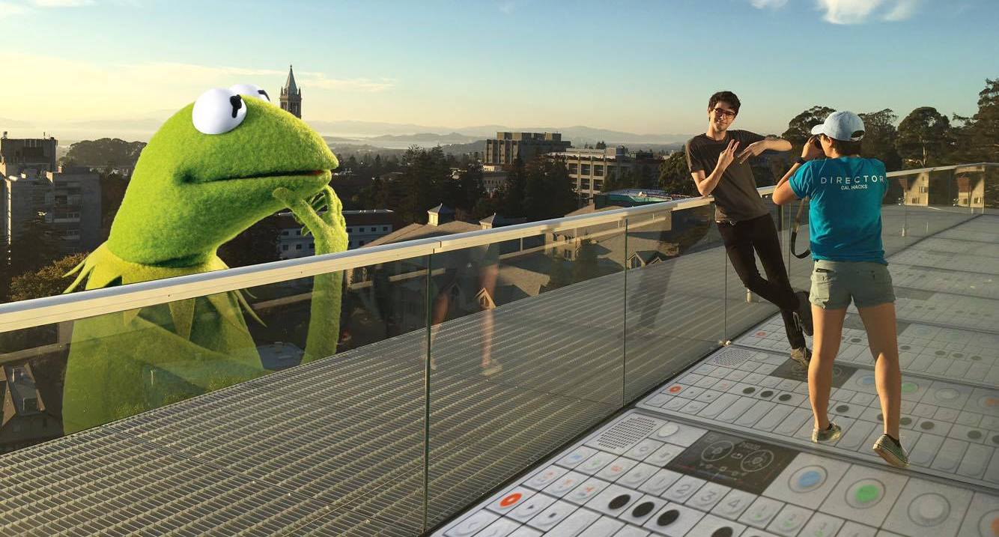

Join the Cal Hacks family.
Cal Hacks is an annual hackathon hosted by UC Berkeley students. We work year round to put on a great event in the Fall. Our members comes from all sorts of majors and interests. Despite this we all get a thrill from seeing thousands of hackers flock to Memorial Stadium.
Apply Now Why Cal Hacks?
Shift gears from your usual academics into a world of planning for thousands of people for one packed weekend. Directors are expected to take initiative, and gradually learn the ins-and-outs of event planning through action. From booking buses for schools across California or closing a sponsor for $50k, it will be incredible learning experience.
With over 2000 hackers in attendance from around the world, we strive to create an incredible experience for all those that attend, and witness the culmination of our hard work in the outstanding projects developed at the hackathon.
But most importantly, Cal Hacks is a family. Cal Hacks alums have gone on to work at successful companies and found startups, yet they continue to keep in touch with our members. We get to know each other and support each other in our other ventures.
Opportunities at Cal Hacks.
The Cal Hacks team consists of students from an variety of majors.
SPONSORSHIPS
Are you persuasive? Constantly checking email? Reach out to various companies in order to gain the financial capital necessary to put the event on.
MARKETING
Master of Social Media? Help brainstorm marketing campaigns to get the word out to hackers. New creative ideas are welcomed.
DESIGN
Have an eye for aesthetics? Build the public face of Cal Hacks through helping with branding of logos, banners and other marketing materials.
LOGISTICS
Good Organization Skills? Help plan all the fine details of the hackathon including the venue, the food, the transporation, and much more.
TECHNOLOGY
Experience in Web Dev? Understand UI/UX? Use your skills to develop a streamline registration system, or work to upgrade our website.
Recruiting Schedule.
Calapalooza Tabling: Thursday 1/19 @ Sproul
Infosession #1: Thursday 1/19 @ Sproul
Infosession #2: Thursday 1/19 @ Sproul
Applications Due: Thursday 1/19 @ Sproul
Coffee Chats: Thursday 1/19 @ Sproul
Interview Round 2: Thursday 1/19 @ Sproul
Apply Now
Frequently Asked Questions.
Do I need to have gone to a hackathon to be a director?
No, our directors range from people that have founded hackathons in the past to people that have never been to one their life. We value passion about technology and dedication to the team very heavily.
What if I just want to hack or volunteer at the hackathon?
Currently we are recruiting for new directors but when the actual event draws closer we will reach out again for applications to hack or volunteer at the event.
Can I do more than one thing? / What if I don’t know what I want to do?
Look into all different areas and express your interest in whichever areas on the application form. Do not worry that you're interested will change once you join the team, we are flexible with what you work on. But we suggest you are true to your interests as we strongly believe that real interest will stand out more than a fake one.
What is the time commitment for being a director?
The time commitment ramps as the hackathon becomes closer and you should be ready to commit a significant amount of time. However, do not let the fear of a large time commitment what is stopping you from applying, you will gradually adjust to the flow of the team and will be manageable.
How to stand out on the application?
If possible, make it out to one of our infosessions and try to talk to our directors. It becomes a lot easier to make a decision when we have a face to pair with the online application.
Apply Now